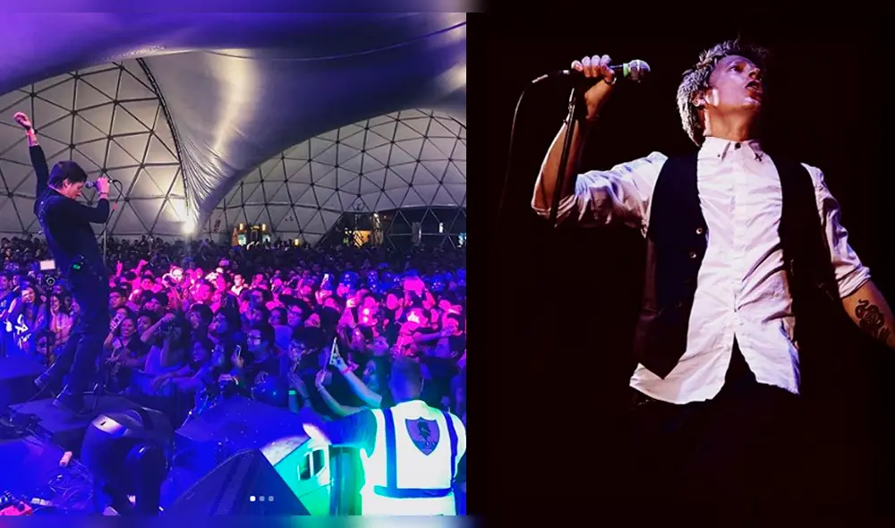

Visión
Llevar el rock peruano moderno a nuevas audiencias con canciones que hablan de corazón y vida cotidiana.
Salim Vera
Rock peruano con presencia televisiva
Bienvenido al rock de Salim Vera
Salim Vera trae una energía vibrante, letras con sentimiento y un estilo inspirado en el rock urbano a la audiencia que aún no lo conoce.

Soy Salim Vera, cantante de rock peruano con reconocimiento en televisión. Mi música combina guitarras potentes, letras sinceras y un estilo que busca conectar con el público que quiere descubrir un nuevo ícono del rock nacional.
Llevar el rock peruano moderno a nuevas audiencias con canciones que hablan de corazón y vida cotidiana.
Un rock directo, lleno de melodía y emoción, inspirado en sonidos televisivos y ritmos urbanos.
Crear shows inclusivos y accesibles que celebren la música, el público y la cultura peruana.
Salim ha demostrado su talento en televisión y escenarios locales, construyendo una carrera sólida en el rock nacional y ganando nuevos seguidores con cada presentación.
Conoce los próximos eventos donde podrás disfrutar del trabajo en vivo, charlas y experiencias inmersivas.
15 de junio · 20:00 h
Una noche de rock peruano con canciones potentes y una energía que invita a cantar juntos.
28 de junio · 18:30 h
Versión íntima de sus mejores temas y una charla sobre su proceso creativo.
12 de julio · 19:30 h
Gran presentación con invitados especiales y estreno de un nuevo sencillo.

Explora los lanzamientos de Salim Vera con un carrusel de álbumes que muestra sus canciones más importantes.

2024 · Single debut con guitarras eléctricas y letras emotivas.

2023 · EP que mezcla rock con matices pop y energía televisiva.

2022 · Álbum conceptual inspirado en la vida urbana peruana.
¿Quieres trabajar con Salim o invitarlo a un evento? Escríbenos y te responderemos pronto.
Correo electrónico:
salim@ejemplo.comBooking & prensa:
booking@salimvera.com